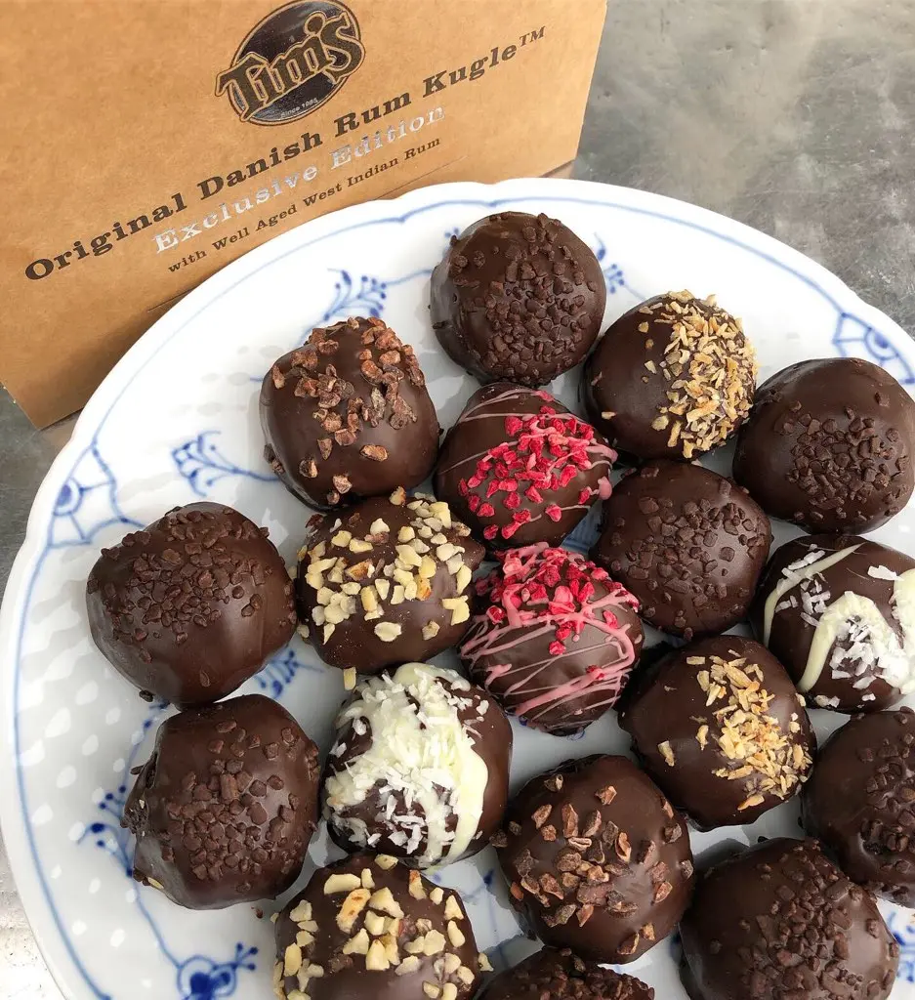
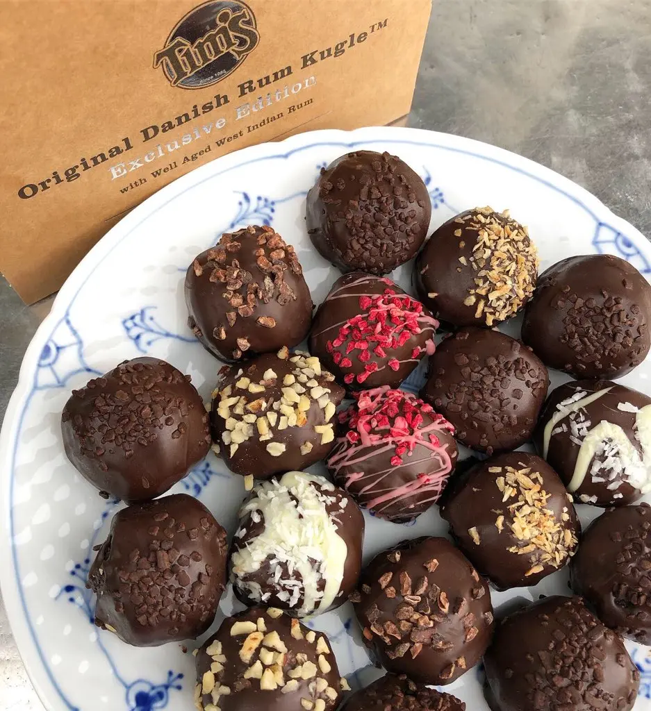
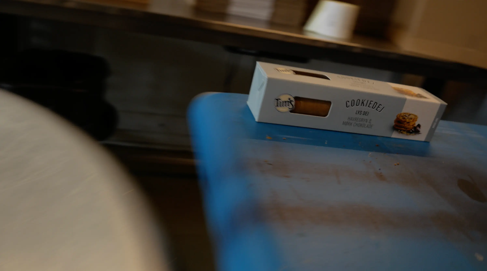
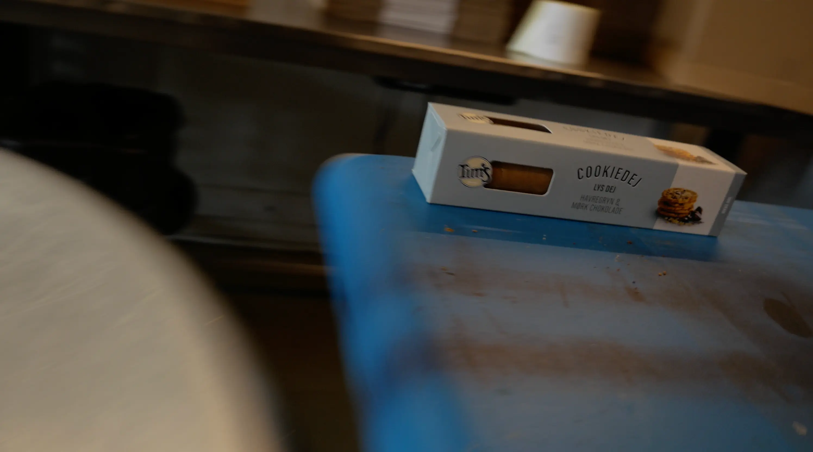

Om os
Vi byder dig stolt velkommen til Tim's cookies søde univers. Tim's cookies er et kulturelt styrket bageri med fokus på smag, kvalitet og kun de bedste råvarer. Tim's cookies blev etableret i København en kold november morgen tilbage i 1985 af dansk-amerikaneren Tim Pape, som er født i Hollywood, Californien.
Det hele startede med et savn til sit hjemlands Chocolate Chip Cookies, derfor besluttede Tim sig for at åbne sit eget lille bageri på Nørrebrogade 42, hvor det hele blot handlede om at dele Tims passion for lækre cookies med omverdenen. Tim's Cookies blev hurtigt en succes, og senere blev sortimentet udvidet med basis i Tims søde tand. Gennem de seneste 30 år har Tim's sendt millioner af cookies, brownies, banankager og romkugler over disken.
Tim's har mange eksklusive forhandlere rundt omkring i Danmark og Norge. Der bliver også solgt til bl.a. Nemlig.com, Interflora, Salling, BC Catering, 7Eleven og mange flere.
I sidste ende handler det om at dele Tim's passion og kærlighed til gode råvarer, ved at skabe den perfekte kombination af smag og kvalitet, så du altid kan få lidt til den søde tand.
Velkommen og velbekomme!
Team Tim's cookies.
 

 
